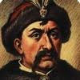
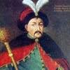
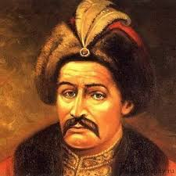
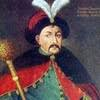
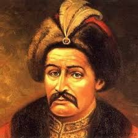

Хмельницький неодноразово брав участь у козацьких посольствах до короля та сейму з метою відстоювання прав українського народу. Король Владислав IV одного разу відправив Хмельницького до Франції для переговорів щодо використання козаків у війні з Іспанією. У наслідку досягнутої домовленності у 1646 році 2400 козаків виїхали до Франції, де відзначилися при взятті Дюнкерка. У цей же час після приборкання козацько-селянських повстань посилився тиск на український народ. Свавілля польської шляхти відчув на собі й Богдан. Він втік у грудні 1647 року на Січ і там оголосив план підготовки національно-визвольної війни, що був одностайно підтриманий запорожцями. На Січі почали зосереджуватися великі маси пригнічених селян зі всієї України, а Богдан поїхав до кримського хана з метою залучити його до своєї справи.
Фотогалерея
 


